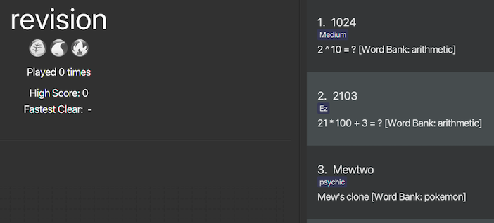

1.  Overview of Dukemon
Overview of Dukemon
Dukemon is a desktop flashcard application, which aims to streamline and gamify
the process of learning words and definitions.
The user interacts with it primarily through a CLI (Command Line Interface), with some GUI (Graphical User Interface) features.
Allow me to brief you on some useful terms and to give you a context.
-
Flashcards are termed as
Cards. -
A collective set of
Cardsare termed asWordBank. -
A general flow of Dukemon's usage is as follows:
-
Note taking phase
-
User creates/selects a
WordBank. -
User populates the
WordBankwithCards, or edit theCards.
-
-
Learning phase
-
User starts the game using selected
WordBank. -
Dukemon prompts the questions, and user has to answer accordingly.
-
Dukemon ends the game.
-
User reviews performance from statistics page.
-
-
2. Summary of contributions
2.1. Major feature
Word Bank Management
-
What it does:
-
Enables user to have a high level management for his word banks and cards through CLI and GUI.
Is semi-automated by Dukemon to enhance user’s learning experience.
Consists of four complementary distinct sections.-
Word bank’s data structure and its storage system:
Allows developers to use and extend this architecture to streamline their feature implementation.
Allows user to save and load their word banks.
Is implemented with a robust underlyingWordBankListdata structure, with its ownWordBankListStorage, along with rich integration ofModel,Storage,LogicandUIto synchronise its data. -
User Commands:
Allows user to customise cards/word banks throughCardCommands/WordBankCommands. -
Drag and drop:
Allows user to export their word bank out of their computer simply by dragging it out of Dukemon.
Likewise, it allows user to import a word bank file from their computer by dragging it into Dukemon. -
Revision word bank:
Allows user to visit a centralised word bank that automatically collects cards for revision.
Cards that were answered wrongly are automatically added to this revision bank.
Likewise, cards that were answered correctly during game play are automatically removed from this revision bank.
-
-
-
Justification:
-
Well designed architecture and well implemented data structure streamlines integration and allows extension for features that builds on top of it. (statistics, game, settings)
-
Management system is essential for a self-typed flashcard app like Dukemon.
-
Drag and drop accelerates the sharing of knowledge/notes with friends, thereby enhancing user experience.
-
Revision bank improves the learning process by helping the user collate cards that requires revision.
-
-
Highlights:
-
There exists multiple ways to design and implement word bank management. Throughout Dukemon's development, it has been restructured and rewritten a few times before finally coming to how it is implemented now.
This was primarily because my teammate’s features requires heavy and continuous integration with word banks management. We came together twice every week to discuss how our features should be integrated with one another.
To best implement it, I spent considerable amount of effort to study different design patterns and architectural styles, such as MVC (Model View Controller), Observer Pattern, n-Tier Style, Event-Driven Style, to realise the final design. -
Continual in-depth discussion with team member, Subbash, to find the best design to integrate user commands with his different modes.
-
Discussed with team member, Paul, who is in-charge of UI, on Observer Pattern usage to display word banks and cards that automatically update itself.
-
Consulted team member, Jason, on how I can best leverage his statistics feature to streamline my revision word bank implementation.
-
Learned and adapted Callbacks and Functional Programming into my drag and drop section to preserve the quality and structural integrity of the existing code base, from team member Yi Da.
-
Individually sourced for proper online tutorials and online code references to implement drag and drop section, and design concepts such as Observer Pattern and MVC within cards and word banks.
-
-
Credits:
-
Online resources
-
Teammates
-
For their continual discussion, presence and support as mentioned in my highlights above.
-
-
Tutors
-
For their unconditional effort in guiding us and providing us with valuable resources and feedback throughout Dukemon’s development.
-
-
2.2. Minor features
-
Default word banks for new players
-
Implemented multiple user friendly word banks for user to try out. (pokemon, arithmetic, trivia, graph, cs2103t)
-
Created on the first launch of Dukemon (implemented through preferences file), and behaves like normal word bank. (Can be edited and removed)
-
-
User experience centric messages
-
Played the game insane amount of times to design constructive feedback to display on the command box from the user perspective.
-
Developed user friendly command usage feedback that guides the user to using Dukemon.
-
-
Automatic creation of folders.
-
Implemented the initialisation of required folders for related files automatically if not present.
-
2.3. Other contributions
-
Code contributed:
-
Overall: [All Commits] [RepoSense] [GitHub]
-
Functional:
-
WordBank: [WordBank] [WordBankList]
-
Storage: [WordBank storage]
-
Commands: [Card commands] [WordBank commands]
-
Command parsers: [Card command parser] [WordBank command parser]
-
UI: [Card display] [WordBanks display]
-
Data for Dukemon: [Default data]
-
-
Tests:
-
Commands: [Card command test] [WordBank command test]
-
WordBank: [WordBank storage test]
-
Data for testing: [WordBank test data] [WordBankList test data]
-
-
-
Other contributions :
-
Discovered and fixed huge amount of bugs across different parts of Dukemon. [Issues resolved] [Bugs fixed]
-
Project management:
-
Found members and formed the team. Went extra miles to bond everyone through fine details.
-
Heavily scrutinised ideas during early stage of idea development, inorder to develop a product idea that our team can fully believe in and dedicate effort.
-
Set up organisation repo, including issues, label and milestones.
-
Set up Netlify to improve workflow.
-
Took initiative to kick start the project by scheduling meetings.
-
-
-
Documentation:
-
Wrote a major chunk of User Guide’s skeleton for my teammates (This does not include writing my own section within UG): [UG update 1] [UG update 2] [UG update 3]
-
Studied and improved styling for team’s UML diagrams. [Style.puml]
-
-
Community:
-
Reviewed PRs. (with positivity): [TimeBook] [Jason’s new command] [Yida’s clean code]
-
Reported bugs for other teams in the class, in the form of GitHub issues. [Njar]
-
-
Tools:
-
[JUnit 5] for testing.
-
[JavaFX] [SceneBuilder] for Dukemon’s UI.
-
[PlantUML] for UML diagrams.
-
[Netlify] for workflow improvement.
-
3. Contributions to the User Guide
Given below are sections I contributed to the User Guide. They showcase my ability to write documentation targeting end-users. |
4. Word bank management
4.1. Drag and drop
Streamline the process of sharing of word banks with friends.
 →
→
 →
→

From HOME mode, you can view your WordBanks.
Simply drag and drop a WordBank .json file from your computer into the Dukemon GUI.
 →
→
 →
→

Likewise, drag and drop a WordBank out of the application, into say,
your desktop, or chat applications.
Try it!
| Dukemon only accepts .json files when importing WordBanks. Attempting to import or export other types files will not be successful. |
4.2. Revision bank
A revision bank is automatically updated for you, every time a game session ends.
It collates all your wrong cards, whichever WordBank it may have came from.
It is also smart enough to remove the cards if you have cleared it afterwards.

Revision bank is best appreciated when you actually play around with some word banks, and then visit the revision bank to revise wrong cards. Give it a try!
5. Contributions to the Developer Guide
Given below are sections I contributed to the Developer Guide. They showcase my ability to write technical documentation and the technical depth of my contributions to the project. |
5.1. Word bank data structure and its storage

WordBankList within Storage and Model.WordBankListStorage consists of robust and self-explanatory methods in which users can use and extend upon easily.
Alongside with word bank’s data structure, they lay the foundation for my other complementary sections of Word Bank Management.
On top of that, they serve as a essential foundation for Dukemon. As such, these data structures and methods were required by my teammates, to build their own feature implementations. (Statistics, Game, Settings)
5.2. User commands
Allows user to customise Cards and group them according to topics (word banks).
User commands edits and manipulates Cards and WordBanks heavily.
|
As mentioned previously, user commands will extend and utilise word bank’s data structure and storage heavily. You can refer to it to enhance your understanding of this implementation. |
Let me first introduce you how these commands are implemented and structured in Logic.

Logic with emphasis on CardCommands and WordBankCommands.5.3. Drag and drop
Walkthrough - Drag in.

LoadBankPanel is the corresponding class and the FXML file that displays the word banks for the user.
It is deeply nested within UI and only has access to an ObservableList<WordBank>.
This means it has no way to perform commands, update model or update storage.
-
To work around this, a functional callback is registered within LoadBankPanel.
-
LoadBankPanel registers JavaFX’s UI drag detection and drag dropped methods, with the callback.
-
After which, the callback essentially performs an
ImportCommand, to load the word bank.
It is also noteworthy to mention that, dragging into Dukemon functionality is well guarded against:
-
Not json file format.
-
Json file but data in wrong format.
-
Json file with correct format but contains duplicate
Cardswithin.
User receives apt feedback through the command box for different cases.
This is possible with careful exceptions handling within the ImportCommand itself.
5.4. Revision bank